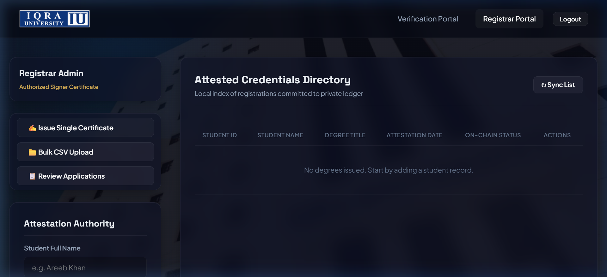

01 // THE STARTING POINT
Credential fraud is systemic.
Centralized databases are single points of failure.
Traditional academic degree verification requires sluggish email correspondence, manual registrar verification, and third-party background check agencies that take days or weeks. Centralized university servers are vulnerable to administrative tampering, unauthorized database alterations, and data breaches.
This project architected an immutable, permissioned Hyperledger Fabric blockchain solution coupled with an interactive client-side Zero-Knowledge Proof (ZKP) sandbox to verify student credentials instantly without exposing sensitive identity data.

FIG 4.0 — PUBLIC ATTESTATION SCANNER: Instant drag-and-drop PDF hash computation against the on-chain ledger state.

FIG 4.1 — REGISTRAR DASHBOARD: Batch attestation console generating cryptographic QR codes and committing transactions.
02 // ARCHITECTURE IN PRACTICE
Cryptographic guarantees from issuance to proof.
STEP 01
Permissioned Hyperledger Fabric Topology
The network is partitioned with Raft consensus orderers, Fabric Peer nodes, and CouchDB state databases. Only authorized university registrar identities holding valid cryptographic X.509 certificates can execute the degree issuance smart contract.
STEP 02
Drag-and-Drop Merkle Tree Proofs
When an employer uploads a PDF transcript to the verification portal, a SHA-256 digest is generated client-side in the browser. The hash is queried against the blockchain ledger; if even a single pixel or character of the degree has been modified, the cryptographic hash fails validation instantly.
STEP 03
Zero-Knowledge Proof (ZKP) Sandbox
An interactive React-based sandbox simulates Zero-Knowledge Proofs (PIN ZKP) and Tornado Cash-style state mixing, allowing verifiers to confirm that a student achieved an honours GPA threshold without revealing their raw numerical transcript or private student ID.
03 // SECURITY SPECIFICATIONS
Enterprise grade cryptographic integrity.
< 300ms
Hash Verification Speed
SHA-256
Cryptographic Digest
Zero-Knowledge
Privacy Proof Mode